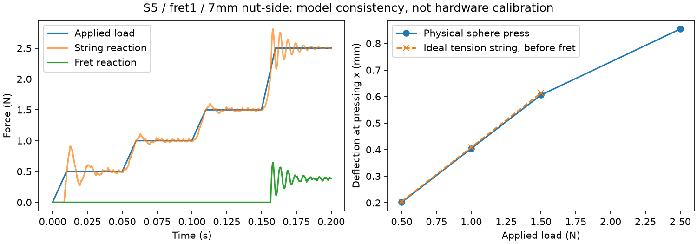
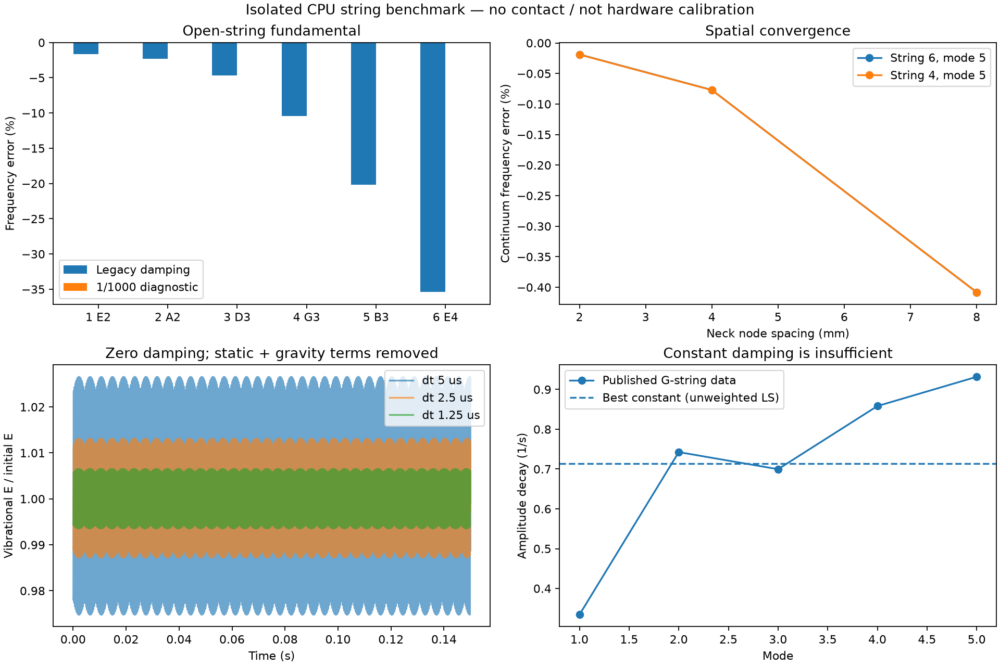
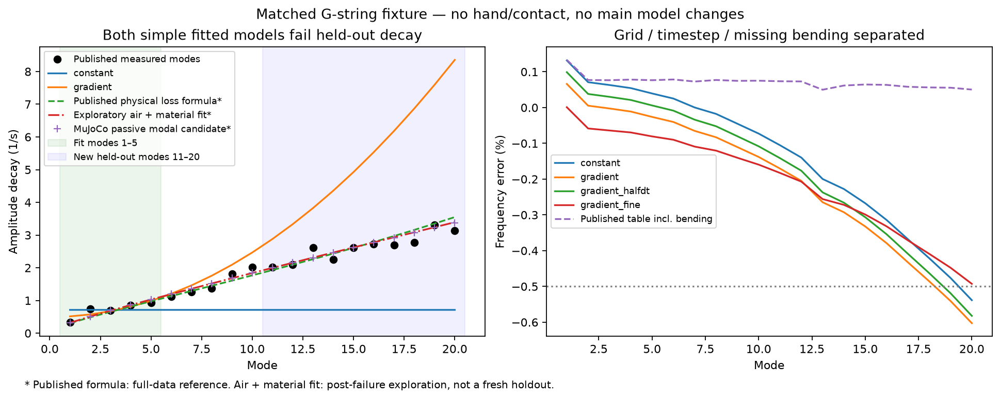
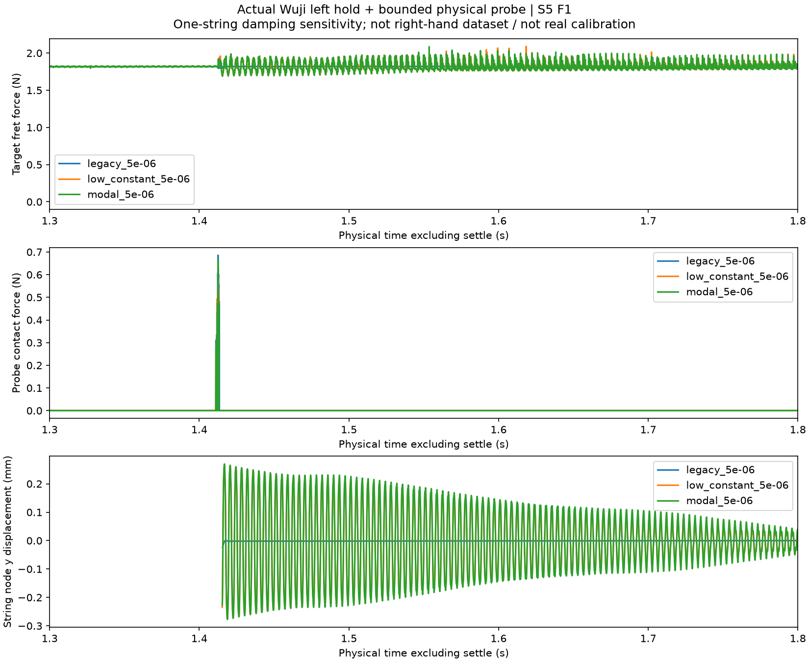
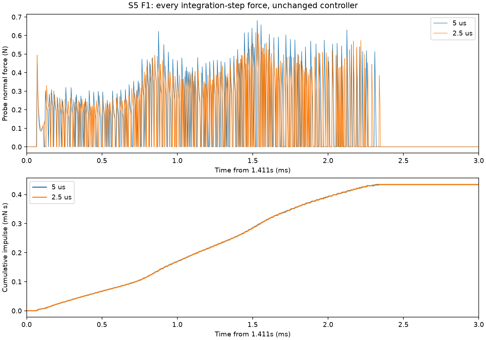
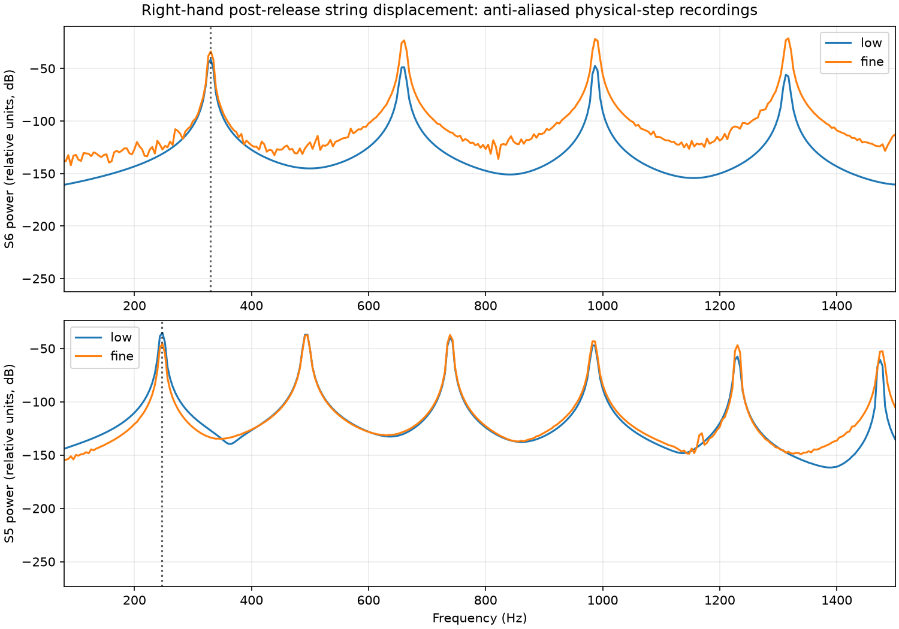
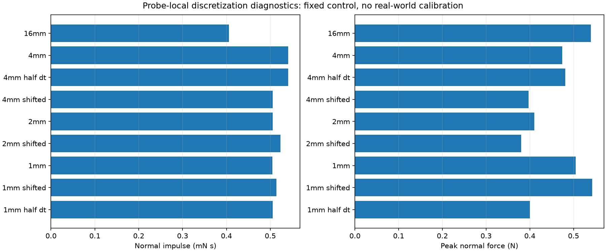
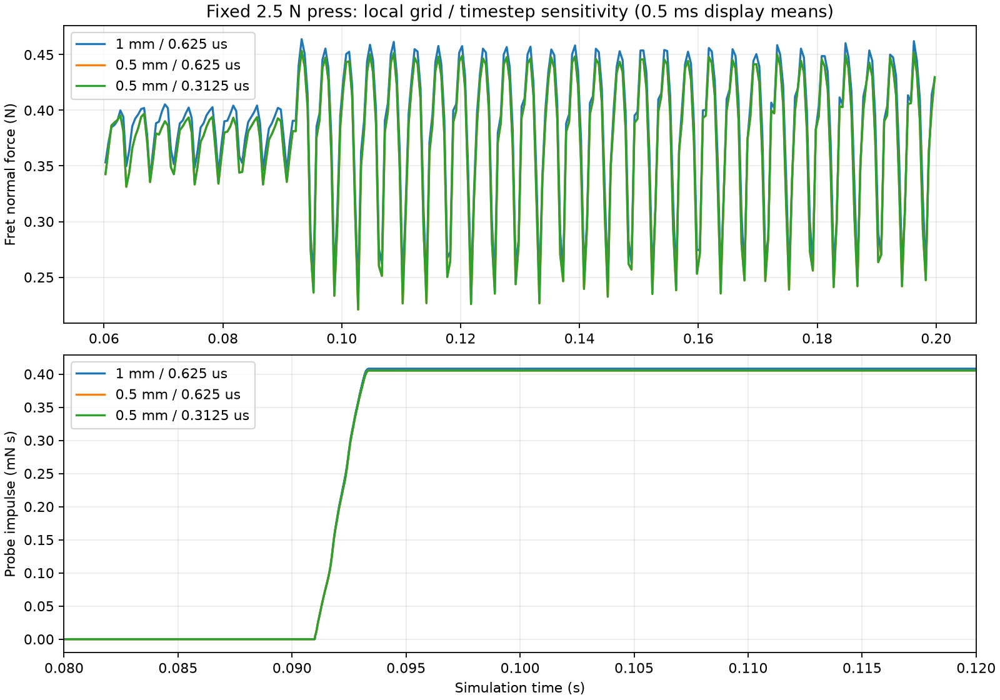
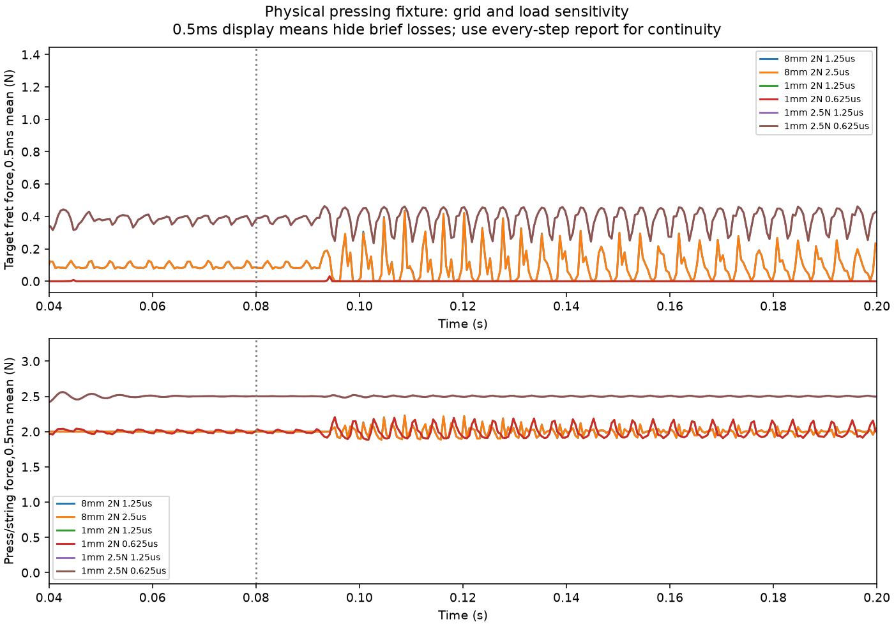
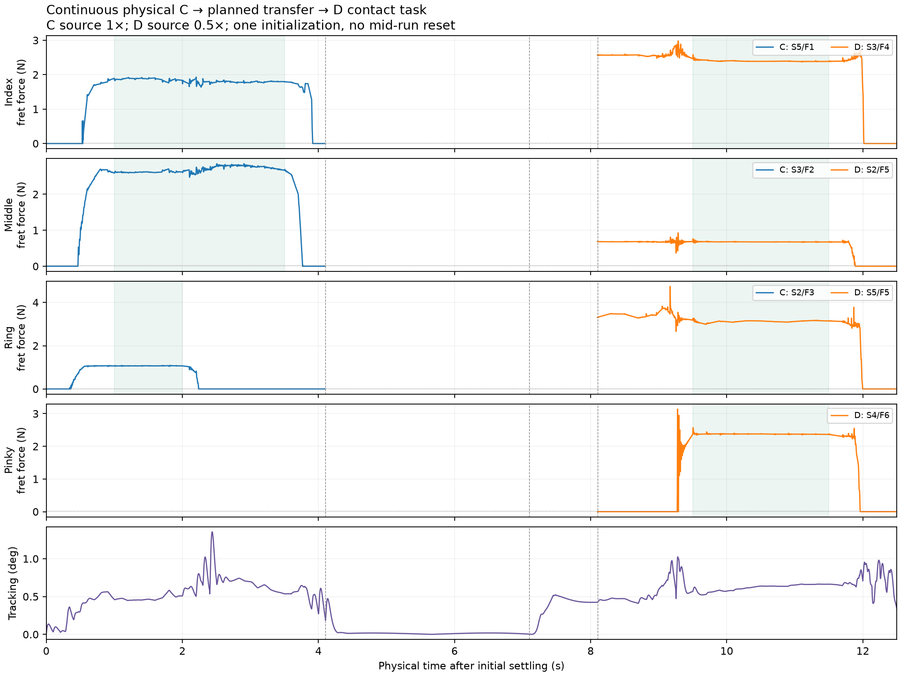

建议：先受限残差控制
保留已验证参考和限力伺服，先比较确定性反馈与小型残差 PPO。Actor 使用关节、相对腕位姿、短历史、当前/未来目标；真实接触状态可给特权 critic，不把真机没有的精确品丝力偷偷给 actor。
先左手20关节+双腕残差，右手手型固定；有必要再开放右手关节。奖励要求真实按弦保持、拨弦冲量及释放，并惩罚误弦、异常力、超时和饱和。所有位移仍由物理驱动。
用两只灵巧手弹吉他。
从人手 MoCap 出发，让机器人在真实接触动力学中按弦、拨弦与协调时序。先在仿真里建立可靠证据，再走向 Wuji Hand 2 + Unitree G1。
2026-10-08 · 一次 reset，C 拨 5→3→2；1.5 秒完成松手、换位和 D 落指，再拨 5→4→3→2。总物理时长 5.37 秒，默认原速播放；C→D 完整转换为 1.5 秒。四视角，无音频。
429.6 万物理步：七次拨弦均接触并释放；C 保持、松手、腾空换位、D 四指保持检查通过。误拨邻弦、移位触弦、自碰、手与刚体碰撞均为零。换位腕 RMS 0.516 mm，关节 RMS 0.882°。
范围：基准及两组冻结双腕偏差（y ±0.3 mm、z ±0.1 mm）已完成：三组共 21 次拨弦接触和释放通过，过渡保持无断触、无误碰。三组视频均已完整解码及抽查关键帧；仅验证这两个小定位偏差，不称广泛 robust。相较 v2，局部弦网格细化并补回左手关节参考速度；相同接触阈值，失败记录保留。0.02 N 是连续接触事件门槛，不是音质或真机按实证明。
| 运行 | 转换腕 RMS | 关节 RMS | 7 次拨弦 / 释放 |
|---|---|---|---|
| 基准 | 0.516 mm | 0.882° | 通过 |
| 正偏差 | 0.565 mm | 0.885° | 通过 |
| 负偏差 | 0.622 mm | 0.883° | 通过 |
跟踪误差相对原始基准参考计算，含有意加入的偏差；接触每个物理步检查，跟踪统计为 120 Hz 保存状态。媒体文件完整性及关键帧审查已完成；不代表真人解剖映射获得验证。
左手来自 dataset 姿态端点与规划过渡，右手为程序拨弦轨迹，使用刚性拨片支架和虚拟腕驱动。不是连续真人 MoCap，也不是声学或硬件验证。训练未启动。
2026-10-08 · 一次 reset，C 拨 5→3→2；1.5 秒完成松手、换位和 D 落指，再拨 5→4→3→2。总物理时长 5.37 秒，四视角、2 倍慢放，无音频。
改善：补回腕部参考速度后，换位腕 RMS 从 4.269 降至 0.523 mm；关节 RMS 1.830°。7 次拨弦接触与释放通过，D 四指保持检查通过，未观察到误拨邻弦或移位触弦。
仍未通过：C 食指在释放前有 4 个物理步的目标品接触不足，累计 5 微秒；另有约 1.43 kN 的瞬时刚体接触力。局部同控制重放定位到约 2.095 秒左拇指中节碰琴颈背面。低频曲线和视频未捕捉到这个短事件，不能仅凭视觉算通过。固定参数扰动复测尚未启动。
当前诊断：食指弦网格敏感性、拇指动态跟踪与碰撞。左手为 dataset 姿态端点加规划过渡，右手为程序任务轨迹与刚性拨片支架；不是连续真人 MoCap，不代表声学、硬件或 robust 验证。训练未启动。
接触 milestone 已完成：同一条 C→D 在基准和两个固定小偏差下通过。下一步学习的目标是减少未见定位、时序与动力学误差下的手调，不能把这三组开发结果当泛化测试。
保留已验证参考和限力伺服，先比较确定性反馈与小型残差 PPO。Actor 使用关节、相对腕位姿、短历史、当前/未来目标；真实接触状态可给特权 critic，不把真机没有的精确品丝力偷偷给 actor。
先左手20关节+双腕残差，右手手型固定；有必要再开放右手关节。奖励要求真实按弦保持、拨弦冲量及释放，并惩罚误弦、异常力、超时和饱和。所有位移仍由物理驱动。
Pei Xu 论文及官方代码已核对：先单手再同步，PPO+模仿，GRU编码；参考只用scale/strum短片段。其几何按弦/拨弦奖励不能替代我们的真实弦接触。公开demo预算与论文报告不完全一致，详见Project Doc。
初版建议小MLP+短历史、非对称critic；GAN模仿和潜空间同步作为后续对照。G1真实臂、接触标定与硬件支架仍待验证。
现有带控制、逐步审计和记录的CPU程序约766–769物理步/墙钟秒；模拟5.37秒需约93分钟。它不是GPU训练benchmark。按50Hz分组，100万transition约241天，说明不能直接在当前循环上大规模训练。
| transition/s | 1000万 | 1亿 | 3 seed × 1亿 |
|---|---|---|---|
| 100 | 27.8h | 277.8h | 833.3h |
| 1000 | 2.78h | 27.8h | 83.3h |
| 10000 | 0.278h | 2.78h | 8.33h |
推荐下一项：现有4090上做同模型1→8→32→128环境兼容性、显存与吞吐检查，先复现CPU接触和零残差基线。再讨论小规模pilot，之后至少3 seed及未调参测试。尚未批准执行；不先租卡、不自动开训、不默认GPU支持或更粗弦模型有效。
完整草案、代码行号、观测/动作/奖励、数据划分和预算公式：Project Doc「训练方案草案 v1（2026-10-08）」。
2026-10-08 · 同一次仿真，左手保持 C，右手依次拨 5→3→2，重复两轮。基准及两组固定参数小扰动共18次接触与释放通过；逐步检查没有邻弦、移位或自碰。弦号从粗到细1–6。
四视角、2倍慢放、无音频。仅证明这组局部测试；未验证完整音色或真机。当前继续 C→D 连续双手演奏和严格过渡验收；训练暂不启动，方案待里程碑完成后讨论。
四指在独立摆位下分别完成目标弦接触与释放；无邻弦/自碰。首试2/4，开发修正后4/4，未证明共同腕位姿下四指配合或robust。拇指释放后振幅较弱（采样0.0195mm），通过接触检查不等于拨响合格。视频2倍慢放，无音频。
固定拨片新完成C的3弦2品、2弦3品独立拨验，与前次5弦1品合计三根分别通过；不是连续跨弦或完整C声学验证。下一步：指弹共同姿态的四指交替；拨片一次reset连续5→3→2。
真实夹持候选在0.4秒重力保持中掉落；失败保留。按用户决定转固定附件：食指上的0.3g三角拨片＋3g支架，全部动作通过受限电机和真实接触。
单弦／左C配合：5弦峰力0.97／0.97N；均完成触弦后释放。左C三个目标品接触保持比例100.0%, 100.0%, 100.0%。只拨验5弦1品，其他弦仅保持，未证明完整C各音干净。
4倍慢放，无音频。右手dataset-derived姿态＋程序短路径，尚非dataset拨片轨迹；左手从保存物理状态初始化，不含完整按下与释放。夹持摩擦、支架与材料未实测。本面板为先前5弦基线；新增3/2弦结果见上方。右手任务控制不以dataset轨迹为前置条件。
项目主线仍是 humanoid + 灵巧手真正弹吉他。支撑该目标的潜在贡献之一：面向灵巧操作、经实测验证的弦–机器人双向交互仿真，配套环境、任务和sim/real对照数据。先完成吉他，小提琴作为后续扩展。
来源技法更正：来源论文的右手方案是拇指与食指夹拨片，未覆盖fingerstyle；尚未核实原始数据中的多指裸指拨弦示范。当前机器人食指直接触弦实验是dataset-derived任务改造，不是已确认的真人fingerstyle复现。多指marker存在或移动不能证明它们参与拨弦。
左手C保持＋右手Arpeggio，正常与一次初态小扰动两组均完成。受限电机与真实接触，原probe已禁用。不同dataset片段人工编排时序，不是原始同步双手take。
两组5弦1品拨动后接触保持100%；右手末0.2秒不再触弦；两手自碰、刚体误碰与额外触弦均0。只直接拨验S5按弦，S6为空弦；S2/S3仅保持，未宣称完整C各音干净或已泛化。
视频为物理状态回放，无音频。虚拟腕、仿真接触力反馈与实物标定缺口仍保留。
独立球压头四档力—位移：碰品前0.5/1/1.5N对应0.202/0.404/0.606mm，与理想张力弦相差约1.2–1.5%；2.5N进入品丝承力。不是实琴校准。

当前主线：逐一拨验其余按弦，再扩双手任务。精细音色后置，力学底线保留。本轮所有physics/render结束；heartbeat保持暂停；仅本地更新。
弦乐非线性接触与摩擦已有研究，且有公开实现：Desvages & Bilbao 2016、EfficientBowedString。找不到即插即用模型，不等于没人做过弦乐仿真。
小提琴需要弓–弦黏滑、弓毛柔顺及无品按弦验证，不能仅替换吉他参数。GPU、真实接触标定与完整双手演奏仍未完成。
“Robust / close to real”必须附范围、误差和失败率；合成数据量不替代质量与实测证据。
2026-10-07：用户已同意弦模型优先。保留 tendon 架构；先独立测量，再恢复手和品丝接触，最后验证 GPU。
过大阻尼是小振幅空弦频偏的主因。除以 1000 是诊断，不是最终标定。
接触测试原“小于 0.1% 损耗”包含静态预张紧能量；扣除后振动能量损失约 41.3%。只限该测试，不能外推实际手部接触。
GPU、实物标定、双手演奏、全数据集 robust 均未验证。
24项恒定阻尼/网格/时间步实现检查通过；12项频率相关阻尼实现检查通过；另6次验证扣除重力势能后的能量收敛。低阻尼六弦基频误差小于0.025%。这是无接触直弦fixture，不是实际拨弦或真机标定。
恒定阻尼无法匹配公开G弦的逐阶衰减；频率相关候选尚未作为最终模型采用。匹配实测工况、多模态、手部接触和GPU仍待验证。

前1–5阶拟合，最初候选在11–20阶留出失败：恒定阻尼误差最高78%，频率平方项约167%。新空气＋材料损耗是失败后的探索，不计作新的盲测成功。
独立被动模态候选双时间步实际衰减误差约12%；高阶频率仍约0.54%偏差，未整体过筛。此独立基准未加弯曲刚度；后续单例接触对照见下，有效弦长变化的准确性和GPU仍未验证，未替换主线。

旧阻尼、低常数阻尼、频率相关候选三组真实物理对照完成，另完成低常数半时间步复核。相同Wuji左手、参考和控制器；只改变第5弦阻尼，物理拨头不是dataset右手。
三组在拨弦及随后0.4秒内目标品接触100%，无手部自碰或硬件误碰。旧阻尼振动难辨；低阻尼主峰约260–263Hz，接近目标261.58Hz。短窗频谱是诊断，尚未证明真实接触衰减或全任务鲁棒性。
半时间步拨头峰力相差 9.63%，瞬时力尚不能称已收敛。主线模型未替换；其他弦、真实右手、硬件与训练仍需验证。

2弦在5/2.5/1.25µs下目标品接触69.4%→99.994%→99.9975%；最后两档逐步冲量差0.125%，峰力差2.38%，仍未严格连续接触。3弦在5µs失稳，在2.5/1.25µs完整执行且保持100%；冲量差0.062%、峰力差2.21%。
5弦逐步冲量差0.122%，纠正了稀疏采样造成的39%假象；峰力0.681→0.616→0.548N，瞬时力仍未收敛。低阻尼dataset右手无自碰/硬件误碰，但尚未做新时间步收敛或声学验收。
未替换主线、未启动训练；这是数值诊断，不是真机标定成功。

左右手各三组已完成，另两次右手高频记录复核完成。相同dataset参考和控制器，依次比较旧阻尼、全六弦低阻尼、低阻尼加拨弦区1mm网格。
右手三组无自碰/琴身碰撞，跟踪约0.35°；细网格相对低阻尼旧网格，S6/S5累计法向受力变化约+1.1%/−2.3%。左手C三指接触保持且无自碰/硬件误碰，跟踪约0.39°；但细网格使物理拨头冲量增加23.25%。抗混叠谱线接近预期音高，高次谐波仍敏感；不把动作稳定当作模型通过。

真实物理执行的记录状态回放；无合成音频；保留原仿真接触力补偿，不代表真机观察器已验证。正式模型未改。
去掉手仍复现拨头接触脉冲，冲量远比瞬时峰力稳定。按弦夹具2N处于约1.95N线性首次碰品估计的临界附近：粗网格约70%品接触，1mm细网格低于0.4%。
细网格2.5N敏感性对照在两个dt均保持100%，平均品力0.384N、冲量差0.029%，峰力仍差6%。这是自适应诊断，不是13/13任务通过，也不是Wuji手或真实材料标定。主线模型未改。
新增0.5mm局部网格复核：相对1mm，平均品力差2.79%、冲量差0.70%，均保持接触。0.5mm再减半时间步，冲量差0.009%，但瞬时峰力仍差7.39%；不能称瞬时力收敛或全弦空间收敛。新增拨弦区16→4mm对照使冲量增加约33%；4mm半时间步冲量差仅0.025%。因此冲量的时间步稳定不等于空间收敛，当前不能直接作为训练接触基准。4mm节点平移2mm使冲量变6.43%；2mm结果接近平移后的4mm，更细1mm已复核：对2mm冲量差0.16%，半格平移差1.83%，半时间步冲量差0.16%但峰力差20.8%。原13次＋9次短诊断全部结束，尚未作为正式模型采用。



保留旧模型和失败证据；扣除静态预张紧能量；以解析信号检查频率/衰减拟合。
完成条件：测量工具能恢复已知频率与衰减；无接触能量误差随时间步减小，数值容差执行前冻结。
真实质量；先素G弦与细E，再六弦；单模态与多模态测试；独立扫描阻尼、网格、dt。
完成条件：分别报告基频、前几阶模态、衰减和收敛；Siconos实验条件与本项目参数分开；候选不称真机标定。
先单指按住再拨，区分自由段振动、接触耗散和控制器做功；对照C三根目标弦。
完成条件：检查目标品保持/打品、音高、衰减、邻弦、冲量及峰值；不能只凭静力通过。
新旧模型成对回放；复核高把位C、完整1.5秒C→D和右手自然释放；再修落点与释放入口。
完成条件：不逐片段改物理参数追成功；记录退化；通过的开发结果不冒充未见数据泛化。
CPU基准成立后比较相同模型在Warp上的支持、数值结果、吞吐与显存；不默认支持。
完成条件：物理一致性和吞吐分别报告；训练模型若近似，必须单独验证并记录差异。
Project Doc：notes/GUITAR_DEX_PROJECT.md；实验细节：notes/mentor_physics_checkpoint.md；执行约定：codex.md。side agent 建议经独立评议，不自动成为设计决定。仅本地预览，未发布。
12.5 秒真实动力学执行。C 三指、D 四指目标品丝在各自保持窗口内均持续接触，释放检查通过；名义时间步峰值 6.01 N，关节 RMS 0.51°，手腕 RMS 0.36 mm。旧版斜向进入 D 时，中指未压住目标品且产生 15.83 N 峰值；先在上方完成换位、再垂直下压后修复。
C 原速、D 半速；中间 4 秒为规划动作，不是连续真人录制。D 是高把位的候选接触任务，未认证为标准开放 D 和弦。使用有力限幅的虚拟手腕，尚无右手、音频或真机验证。

目标不是让手在画面里“像在弹”，而是让动作、接触、声音与真实硬件约束连接起来。下面是整个项目的工作假设和实验路线；尚未验证的部分不算进已完成进度。
人手和机器人手结构不同，指甲 marker 也不是指腹接触点。单纯对齐姿态不能保证按住正确的弦，更不能保证拨动后能产生目标音。
终点是一段可重复、可解释的双手演奏：正确弦／品与起音时序，有限力矩，无明显误触；最终在装有两只灵巧手的 G1 上检验。
终点是研究目标，尚未达成。曲目、真机吉他与最终算法待实验确定。MoCap / 任务目标
接触候选 + 不确定性
腕指联合 retarget
接触、碰撞与驱动限制
跟踪 + 接触反馈
左手就绪 / 右手拨弦
振动 / 声音 / 泛化
参数辨识 → G1
当前基线：离线接触约束 retarget，受限电机执行参考，逐积分步做物理验收。还不是已训练的双手 policy。
后续候选：模仿学习、接触反馈或残差控制、RL。先建立相同任务与观测下的比较，再决定是否、在哪个模块使用学习方法。
待检验假设：显式接触目标和物理可执行性约束，能否比只匹配 marker 更少依赖人工调整，并迁移到未见片段？
双向接触、振动、稳健性与控制价值共同验证；配套可复现环境和sim/real数据。研究目标，尚未完成。
保留指法，减少逐段调参，验证未见动作。
把按弦、拨弦时序与硬件约束连接起来。
这些是待实验选择的贡献方向，不是已经证明的论文结论。无硬性日期承诺；按阶段验收推进。
当前先校核弦模型，再恢复左右手回归；下列总体路线保留，具体近期顺序见上方 STR 草案。
统一人手、机器人手和吉他的坐标与物理模型，让失败能够被观察、复现。
产物 Wuji Hand 2 模型、MoCap 映射、共用吉他配置、每步接触与力矩审计。
验收 当前基础已用于小集回归；指腹、接触参数和真实吉他标定仍是独立待办。
保留 dataset 动作与指定指法，在动力学里完成多指按弦、保持与部分释放。
产物 C / F / A / Bb / D 五个片段、20 项回归、轨迹与多视角视频。
验收 当前 20/20 通过；按片段调过参数，使用人工接触候选，并不代表任意动作自动成功。
从 MoCap 提出每指的弦、品、接触区间候选，让不确定性显式可见。
产物 标定依赖清单、冻结的开发／留出拆分、候选标签与人工核对记录。
验收 在 2–3 段未调参的非横按动作上检验；报告错误与拒判，不能用测试答案反推 offset。
从“按住一个姿态”走向连续按下、释放、换指与换位。
产物 连续 retarget、接触状态切换、原速／降速结果、失败分类与批量数据索引。
验收 完整区间验收；开发集与留出集分开，明确速度和初始化条件，不只截取成功画面。
建立真正的拨弦、弦振动与发声评价，区分“有接触力”和“能弹出目标音”。
产物 拨片／指拨方案对照、单弦释放振动、音高／起音／串扰评测。
验收 拨弦由驱动和接触产生；声音分析或合成由物理振动驱动，验证按弦在拨动后仍有效。
左手准备好接触，右手在正确时刻拨弦；从可执行轨迹走向可适应控制。
产物 双手时间同步、固定轨迹控制基线、模仿／残差控制／RL 对照。
验收 在未见动作、时序偏移和扰动下评估双手成功率；尚未选定最终 policy 方法。
把两只手接到 G1，逐级验证实际安装、支撑、驱动与物理参数。
产物 硬件尺寸与限幅、手臂／手腕集成、参数辨识、台架到双手的分级实验。
验收 先台架单指、再左手、右手与双手；真实观测与仿真对照，不把虚拟腕成功当作 G1 结果。
用明确问题、可靠基线、消融和失败边界支撑 robotics 论文。
产物 任务定义、数据拆分、方法对照、物理与真机证据、可复现材料。
验收 贡献由实验支持；不预设论文结论，不把人工目标或合成音频当原始人类真值。
| Dataset | 验证范围 | 源帧 | 速度 | 正常 | 半步长 | 扰动 A | 扰动 B |
|---|---|---|---|---|---|---|---|
| ChordC | 3 指 · 三指按弦与分步释放 | 0–492 | 1× | ✓ | ✓ | ✓ | ✓ |
| ChordF | 4 指 · 四指尖保持 · 不含横按 | 0–240 | 1× | ✓ | ✓ | ✓ | ✓ |
| ChordA | 3 指 · 相邻弦三指保持 | 120–336 | 0.4× | ✓ | ✓ | ✓ | ✓ |
| ChordBb | 4 指 · 四指保持子任务 | 108–276 | 1× | ✓ | ✓ | ✓ | ✓ |
| ChordD | 4 指 · 四指保持与释放 | 36–300 | 0.5× | ✓ | ✓ | ✓ | ✓ |
正常时间步为 5 μs，半时间步为 2.5 μs。两组扰动组合了 0.8×／1.2× 手指控制增益、±0.5 mm 初始腕位移和 0.5° 关节扰动。它们是有限回归条件，不是对任意扰动的统计保证。
保持区间要求正确手指持续接触且目标弦–品丝法向力大于 0.02 N；同时检查邻弦、刚体、自碰、穿透和驱动限幅。0.02 N 是当前接触检测阈值，不是发音质量或真机安全标准。
只有 C 与 D 在当前清单中验证了释放；A/D 使用慢速。各片段经过人工目标和参数调整，因此不能把 20/20 当作未见动作泛化率。
同指／同弦／同品内修正落点，再降低前馈；原电机限幅不变。旧落点 + 小力按不住，新落点 + 大力仍有大误差，受控对照区分了两个因素。
总接触目标修正最大 4.84 mm（用户批准 ≤5 mm）。数据来源：原 baseline 与最终加密参考的实际执行。
以下视频是机器人仿真中已记录的动力学状态。参考来自 dataset MoCap 与人工接触目标；实际动作由受限电机与接触求解产生。不是训练好的双手 policy，也没有加入演奏音轨。
采用几何初始化与稳定阶段；不代表完整从远处接近。
展开任务看具体产物和验收条件。P0 是当前主线，P1 是关键后续或并行工作，P2 是更后期任务。状态代表记录中的事实；“下一步”不代表有实验正在后台运行。
已比较手型并选用 Wuji Hand 2；Beta1／Beta2 需要核对实际硬件。
完成条件 模型选择有依据；真机版本单独确认。
镜像变换与弦序已统一修正。用户弦号从粗到细 1–6。
完成条件 使用一致映射；1=低 E，2=A，3=D，4=G，5=B，6=高 E。
五段使用相同吉他模型；阻尼按代表弦长分配，细化不偷偷增加总阻尼。
完成条件 实际编译模型的 guitar signature 一致；不把它当空间收敛证明。
已检查正确手指、弦–品丝力、邻弦、刚体、自碰、穿透及驱动限幅。
完成条件 失败不能被截图、平均值或只看手–弦接触掩盖。
最新完整1.5秒C→D两dt执行完成；D保持成立，C释放入口三个零散低品力积分步使严格验收失败。旧慢速基线见历史视频。
完成条件 本次候选接触任务转换已通过；未验证完整音乐和弦、重复往返、其他转换或未见片段泛化。
保留旧模型和失败证据；扣除静态预张紧能量；以解析信号检查频率/衰减拟合。
完成条件 测量工具能恢复已知频率与衰减；无接触能量误差随时间步减小，数值容差执行前冻结。
真实质量；先素G弦与细E，再六弦；单模态与多模态测试；独立扫描阻尼、网格、dt。
完成条件 分别报告基频、前几阶模态、衰减和收敛；Siconos实验条件与本项目参数分开；候选不称真机标定。
先单指按住再拨，区分自由段振动、接触耗散和控制器做功；对照C三根目标弦。
完成条件 检查目标品保持/打品、音高、衰减、邻弦、冲量及峰值；不能只凭静力通过。
新旧模型成对回放；复核高把位C、完整1.5秒C→D和右手自然释放；再修落点与释放入口。
完成条件 不逐片段改物理参数追成功；记录退化；通过的开发结果不冒充未见数据泛化。
CPU基准成立后比较相同模型在Warp上的支持、数值结果、吞吐与显存；不默认支持。
完成条件 物理一致性和吞吐分别报告；训练模型若近似，必须单独验证并记录差异。
弦乐物理与非线性接触已有工作；比较机器人双向耦合、实测、性能与控制用途。
完成条件 明确新增技术或系统/基准价值；未经系统对比不使用first。
没有匹配的任务。可以换一个关键词，或重置筛选。
F 的旧落点 + 小力对照无名指目标品丝始终没有接触；新落点 + 大力则保留大关节误差。两者都不能替代最终低力版本。
A 的加权规划与八初值诊断未找到可采用的明显改进；不据此证明全局不可达。旧 E/G 管线失败不是当前成功结果，也没有被删除。
“通过”只针对冻结的任务、物理模型、速度与阈值。失败记录、人工调整和不确定性是研究结果的一部分。